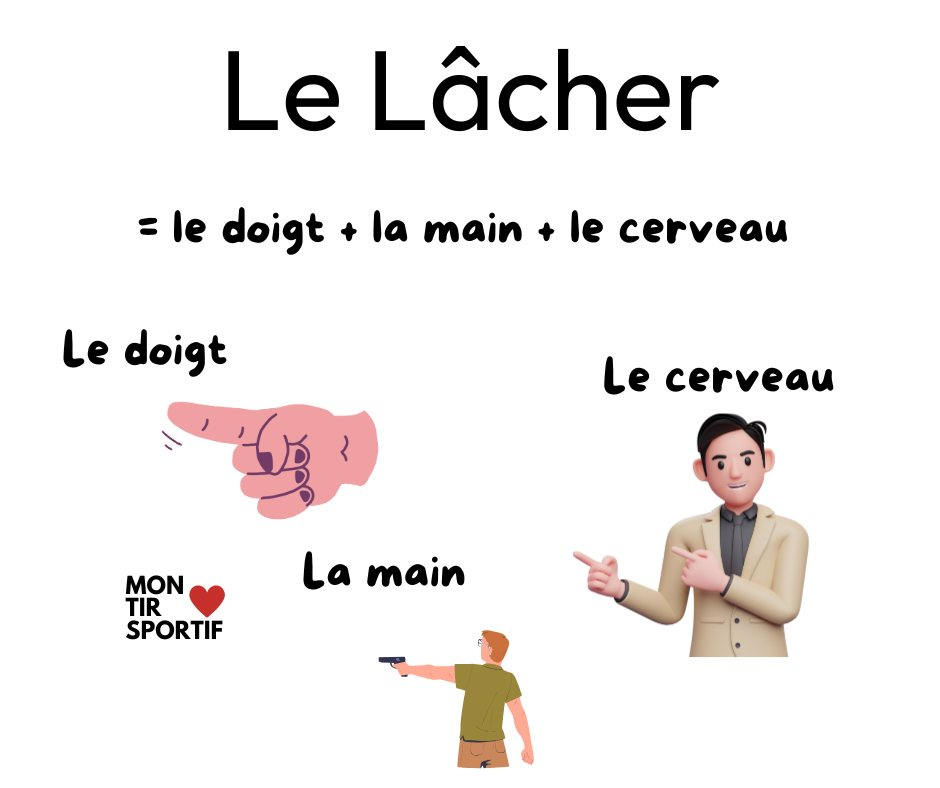
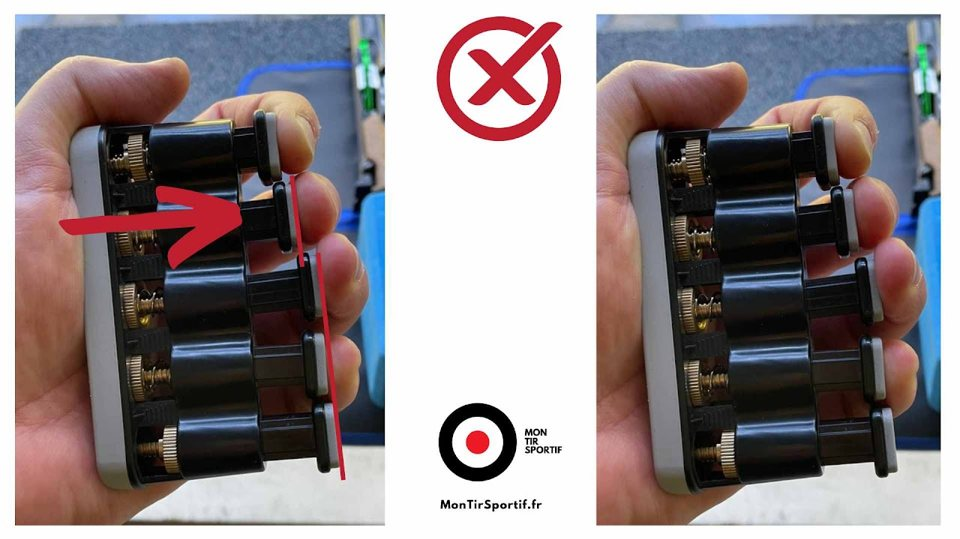

Le lâcher au pistolet
Faire partir le coup sans bouger l’arme : le geste qui fait la différence. Les phases, les types de lâcher, les défauts, l’indépendance des doigts, le lâcher dans le bouger et les exercices, réunis sur une seule page.
Le lâcher, le cœur du tir
Le lâcher, c’est l’action du doigt sur la détente qui fait partir le coup. C’est un mouvement, fait au moment même où l’on cherche l’immobilité : s’il est mal conduit, il déplace l’arme et écarte le canon du centre. C’est souvent ici que se perdent les points, bien plus que dans la visée. Le coup de doigt est le défaut le plus fréquent au début, et le plus limitant.

L’objectif
- Faire partir le coup sans que l’action du doigt ne déplace l’arme.
- Un départ qui surprend le tireur : on ne décide pas de l’instant exact, on continue la pression en gardant l’alignement.
- Un doigt qui agit très lentement, dans l’axe du canon.
- Seul l’index travaille : le reste de la main ne bouge pas.
Le lâcher : définition
Tout sur le lâcher : le rôle de la détente et du doigt
Le doigt, la main et le cerveau
Le doigt
Il bouge : presse-t-il bien dans l’axe du canon ? Sinon, il dévie l’axe du canon, et le point d’impact avec. Il faut donc le déplacer très, très lentement, et dans l’axe.
La main
Ce sont les muscles de l’avant-bras qui font bouger les doigts. Si d’autres muscles que ceux de l’index travaillent, la pression sur la crosse change, et l’impact avec.
Le cerveau
Il ne fait bien qu’une chose à la fois : s’il surveille le doigt, il surveille moins la visée. S’il voit une belle image, il accélère le doigt (coup de doigt) ; s’il la juge imparfaite, il le bloque (doigt de bois).


Les phases du lâcher
- Le placement. Pendant les manipulations, l’index reste allongé sur la carcasse, au-dessus du pontet. Une fois en visée, la pulpe de la dernière phalange se pose sur la queue de détente, sans pression, au centre, et toujours au même endroit.
- La préparation. Pendant la descente vers la cible, on prend la pré-course : la pression monte jusqu’au point dur, toujours dans l’axe du canon. Le point dur est un repère, pas un arrêt.
- L’action. En zone de visée, la pression augmente de façon continue et progressive, droit vers l’arrière, jusqu’au départ du coup… et se poursuit après, jusqu’à la butée de détente.
- La continuation. Après le départ, on garde la visée et la pression pendant une à deux secondes. C’est le moment d’annoncer le coup : où était le guidon au départ ?
Repères de durée
- Entre 3 et 6 secondes environ pour le lâcher : assez long pour absorber le poids de départ, assez court pour partir avant la grande instabilité (manuel FFTir).
- En pression continue, pas plus de 7 secondes environ entre le point dur et la tenue : arrivée en zone de visée et début du lâcher (1 à 2 s), affinage de la visée (1 à 2 s), accommodation (1 à 2 s), départ du coup et tenue (2 à 3 s).


📄 Les phases du lâcher, version à imprimer (PDF)
Les différents types de lâcher
Un bon lâcher surprend le tireur sans perturber la ligne de mire. La position de la ligne de mire au moment du départ n’est pas le premier critère : c’est la stabilité de l’arme qui compte.
Pression continue
La détente est pressée très progressivement. Adapté aux longues phases de stabilité.
Lâcher en préparation
La pression commence avant la stabilité complète et se termine à la surprise du départ. Il réduit le temps de visée : utile quand la lumière est forte ou changeante.
Palier de pression
La pression monte par paliers, avec de courtes pauses, à mesure que l’arme approche de la zone de visée. Le tireur ne sait pas exactement quand le coup partira.
Fiche bensport : Les différents types de lâcher
Connaître sa détente
Détente à pré-course
Une première course réglable, puis un point de résistance qui correspond au poids de départ. Le poids total = pré-course + accrochage.
Détente « filante »
Pas de point de transition net : la surprise du départ est presque systématique. Excellente pour perfectionner son lâcher.
Détente directe
Sans pré-course : on estime le poids restant à vaincre (revolvers, pistolets 50 m).
Le poids de départ compte aussi : 500 g au pistolet 10 m, 1 kg au 22 LR à 25 m. Pour régler sa détente et comprendre son mécanisme : la mécanique de détente, pas à pas et le mécanisme de détente et son réglage.
Coup de doigt, doigt de bois : les défauts
Accélérer brutalement quand le guidon passe au centre. L’arme ne pointe plus le centre : les impacts partent bas, et vers la gauche pour un droitier. C’est l’erreur la plus fréquente.
Voyant les organes de visée bien placés, le tireur accélère volontairement son lâcher : il réagit à ce qu’il voit au lieu de laisser le lâcher automatique se dérouler.
Le doigt s’arrête : le cerveau le bloque, par peur de mal faire ou par recherche excessive de la stabilité idéale. Une prise trop serrée peut aussi le bloquer.
Contre le coup de doigt
- Ramener l’attention sur le guidon, pas sur le score.
- Bouger l’index lentement, dans l’axe du canon.
- S’entraîner sur carton blanc, puis avec les bandes verticales.
Contre le doigt de bois
- Du tir à sec pour retrouver confiance.
- Des exercices de lâcher par paliers.
- Ramener l’attention sur le début du lâcher.
- Des jeux qui forcent à lâcher : l’arbre de duel.
Voir aussi : les 6 erreurs les plus fréquentes · ▶ Le coup de doigt (bensport)
L’indépendance des doigts
Quand l’index bouge vite, le majeur et les autres doigts ont tendance à suivre : c’est naturel, la main serre « en bloc ». Le majeur qui bouge change la pression sur la crosse et provoque un coup de doigt. La solution : bouger l’index lentement et travailler l’indépendance des doigts, comme les guitaristes, pianistes ou accordéonistes. C’est d’autant plus utile que la détente est lourde.


Un exercice de guitariste ↗ · L’indépendance des doigts à l’accordéon ↗
Nous n'avons pas de muscles dans les doigts ! (Scilabus)
Le lâcher dans le bouger
L’arme bouge toujours un peu. Comment obtenir un lâcher propre malgré tout ? En lâchant dans le bouger, sans attendre l’immobilité parfaite : le lâcher se déroule pendant que l’arme évolue dans la zone de visée, et le canon doit pointer vers le centre au départ. Il faut pour cela coordonner lâcher et visée.

Les critères de réussite
- L’arme n’est pas déstabilisée au départ du coup.
- Le guidon et le cran de mire ne bougent pas au départ.
- Le canon pointe vers le centre de la cible.
Le lâcher dans le bouger (MonTirSportif)
Le lâcher au pistolet 10 m (Asian Shooting Confederation, en anglais)
Pour aller plus loin : le bouger et la zone d’acceptation.
S’entraîner au lâcher
Un bon lâcher, c’est un doigt qui agit sans faire bouger l’arme. Pour le vérifier, regardez les organes de visée au départ du coup. Pas besoin d’être debout ni même de tirer : assis arme posée, à sec ou à balles, on observe la même chose. À l’air comprimé, l’apprentissage est plus facile à sec.
Sentir sa détente : 3 exercices à sec
1. La pression continue
Appuyer le plus lentement possible jusqu’au départ, en repérant chaque étape : pré-course, point dur, décrochage, course après décrochage, butée.
Réussi si le tireur ressent chacun de ces repères.
2. Les paliers
Appuyer, marquer une pause, reprendre, et ainsi de suite jusqu’au départ.
Réussi si le départ arrive après un grand nombre de paliers.
3. L’aller-retour
Appuyer le plus loin possible sans faire partir le coup, revenir sur le point dur, recommencer.
Réussi si on enchaîne un grand nombre d’allers-retours sans départ du coup.
Lâcher sans déstabiliser l’arme
Assis, arme posée
Sur carton blanc, assis dans une position proche de celle debout, arme posée sur un coussin. Faire partir le coup sans modifier l’alignement du guidon dans le cran de mire, l’attention sur le guidon. Une dizaine de coups, à sec ou avec plomb.
Debout
Même consigne en position de tir. Puis comparer le lâcher sur visuel non zoné et sur carton blanc : la présence d’un visuel change-t-elle le geste ?
Sur cible électronique Sport Quantum
Le bon lâcher : pas de réaction de l'arme
Le lâcher en pratique
Le lâcher en pratique (2)
Le lâcher sur carton blanc
Le lâcher : partage d’expérience
Contrôler son lâcher
L’annonce
Annoncer chaque coup avant de regarder l’impact. Si l’annonce correspond à l’impact, le lâcher n’a pas déplacé l’arme ; un écart régulier trahit un coup de doigt ou un poignet qui se déverrouille.
Le SCATT
Le tracé bleu montre les dernières fractions de seconde avant le départ : une accélération brusque ou un trait presque rectiligne signale une action parasite sur la détente.
SCATT : lire ses erreurs de tir →
Lâcher, coordination et actions parasites →
La check-list du lâcher
- Index allongé sur la carcasse pendant les manipulations, posé sur la détente seulement en visée.
- La pulpe de la dernière phalange, toujours au même endroit, au centre de la détente.
- Une main qui serre la crosse de façon régulière : seul l’index travaille.
- La pré-course prise pendant la descente, le point dur atteint en arrivant dans la zone de visée.
- Une pression continue et progressive, droit vers l’arrière, dans l’axe du canon.
- L’attention sur le guidon, pas sur le score ni sur le doigt.
- Un départ qui surprend, sans « maintenant ! ».
- La pression et la visée maintenues après le départ, puis l’annonce.
Pour aller plus loin : le lâcher (Préparation technique), le lâcher en détail, le lâcher en pratique, le lâcher dans le manuel FFTir, la stabilité au pistolet.
MonTirSportif – https://pistol.montirsportif.com/le-lacher.html